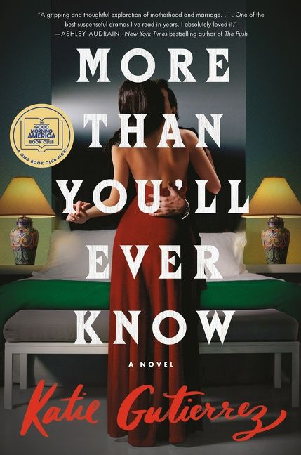
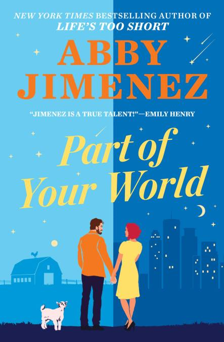
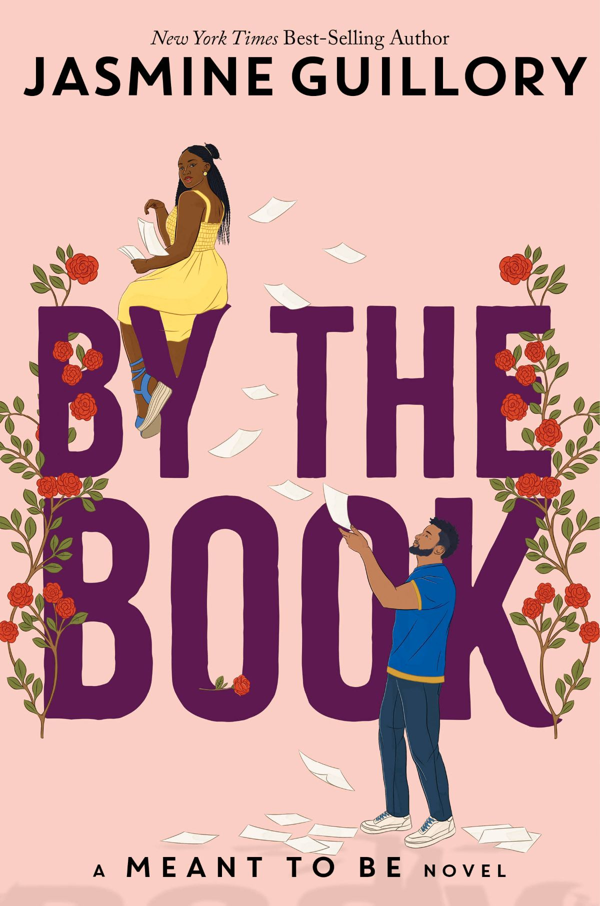
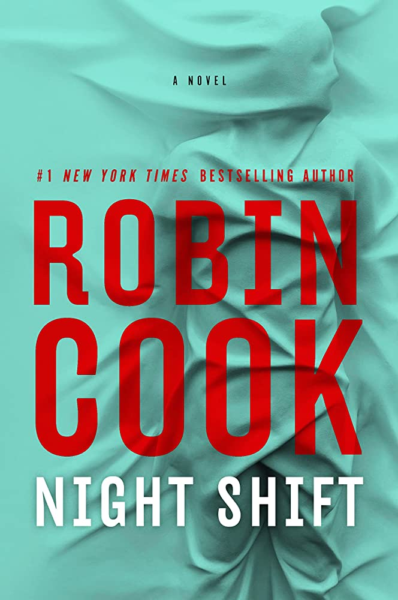

Genres

Horror
Synopsis:
An outcast at her small-town Georgia high school, Madison Washington
has always been a teasing target for bullies. And she's dealt with it because she has more
pressing problems to manage. Until the morning a surprise rainstorm reveals her most closely kept
secret: Maddy is biracial. She has been passing for white her entire life at the behest of her
fanatical white father, Thomas Washington.
e-Book
Hardcover / Paperback
Synopsis:
“Come home.” Vera’s mother called and Vera obeyed. In spite of their
long estrangement, in spite of the memories — she's come back to the home of a serial killer.
Back to face the love she had for her father and the bodies he buried there, beneath the house
he'd built for his family.
e-Book
Hardcover / Paperback
Synopsis:
When the final four women in competition for an aloof, somewhat
sleazy bachelor’s heart arrive on a mysterious island in the Pacific Northwest, they
prepare themselves for another week of extreme sleep deprivation, invasive interviews, and,
of course, the salacious drama eager viewers nationwide tune in to devour. Each woman came on
The Catch for her own reasons—brand sponsorships, followers, and, yes, even love—and they’ve all
got their eyes steadfastly trained on their respective prizes.
e-Book
Hardcover / Paperback
Synopsis:
A terrifying supernatural page-turner that explores ghosts, grief,
and god complexes. Ever since their on-again, off-again college romance, Erin hasn’t been
able to set a single boundary with charismatic but reckless Silas, who has been chasing
the next big high since graduation. When he texts her to spring him out of rehab, she knows
enough is enough. She is ready to start a career, make new friends, and meet a great guy—even
if that means cutting Silas off. But when Silas turns up dead from an overdose, Erin’s world
falls apart.
e-Book
Hardcover / Paperback
Synopsis:
Rob has spent her life running from Sundial, the family’s ranch deep
in the Mojave Desert, and her childhood memories. But she’s worried about her daughter,
Callie, who collects animal bones and whispers to imaginary friends. It reminds her of a
darkness that runs in her family, and Rob knows it’s time to return.
e-Book
Hardcover / Paperback
Synopsis:
Marion Shaw has been raised in the slums, where want and deprivation
are all she know. Despite longing to leave the city and its miseries, she has no real hope of
escape until the day she spots a peculiar listing in the newspaper seeking a bloodmaid.
e-Book
Hardcover / Paperback
Synopsis:
Travel journalist and mountaineer Nick Grevers awakes from a coma
to find that his climbing buddy, Augustin, is missing and presumed dead. Nick’s own
injuries are as extensive as they are horrifying. His face wrapped in bandages and unable
to speak, Nick claims amnesia—but he remembers everything.
e-Book
Hardcover / Paperback
Synopsis:
He’s known as The Cur, and he leaves no trace—except for the victims
he most viciously slays every fifteen years. Young women who refuse to conform and don’t know
when to shut up.
e-Book
Hardcover / Paperback
Synopsis:
In a world reeling from an unusual plague, monsters lurk in the
streets while terrified survivors arm themselves and roam the countryside in packs. Or
perhaps something very different is happening. When a disease affects how reality is
perceived, it’s hard to be certain of anything…
e-Book
Hardcover / Paperback

Synopsis:
Mallory immediately loves it. She has her own living space, goes out
for nightly runs, and has the stability she craves. And she sincerely bonds with Teddy, a sweet,
shy boy who is never without his sketchbook and pencil. His drawings are the usual fare: trees,
rabbits, balloons. But one day, he draws something different: a man in a forest, dragging a
woman’s lifeless body.
e-Book
Hardcover / Paperback
Action
Synopsis:
Ray McMillian is a Black classical musician on the rise—undeterred
by the pressure and prejudice of the classical music world—when a shocking theft sends him
on a desperate quest to recover his great-great-grandfather’s heirloom violin on the eve of
the most prestigious musical competition in the world.
e-Book
Hardcover / Paperback
Synopsis:
Legendary spy and art restorer Gabriel Allon has at long last
severed ties with Israeli intelligence and settled quietly in Venice, the only place where
he has ever truly known peace. His beautiful wife, Chiara, has taken over the day-to-day
management of the Tiepolo Restoration Company, and their two young children are discreetly
enrolled in a neighborhood scuola elementare. For his part, Gabriel spends his days
wandering the streets and canals of the watery city, bidding farewell to the demons of his
tragic, violent past.
e-Book
Hardcover / Paperback
Synopsis:
When Cabrillo is hired to extract an undercover operative in Kenya,
he finds himself on the trail of a deadly international plot. A Saudi Prince seeks to
unleash a deadly assault on U.S. forces, sparking a new war in the Middle East and
ultimately destroying Israel.
e-Book
Hardcover / Paperback
Synopsis:
Enter UNESCO investigator, Nicholas Lee, who works for the United
Nations’ Cultural Liaison and Investigative Office (CLIO). Nick’s job is to protect the
world’s cultural artifacts—anything and everything from countless lesser-known objects to
national treasures.
e-Book
Hardcover / Paperback
Synopsis:
A senior at Harvard, Will fits comfortably in his carefully curated
roles: a perfect student, an art history major and sometimes artist, the eldest son who has
always been his parents' American Dream. But when a mysterious Chinese benefactor reaches out with
an impossible—and illegal—job offer, Will finds himself something else as well: the leader of a heist to
steal back five priceless Chinese sculptures, looted from Beijing centuries ago.
e-Book
Hardcover / Paperback
Synopsis:
In seventh-century Ireland, a scholar and priest called Artt has a
dream telling him to leave the sinful world behind. Taking two monks—young Trian and old
Cormac—he rows down the river Shannon in search of an isolated spot on which to found a
monastery. Drifting out into the Atlantic, the three men find an impossibly steep, bare
island inhabited by tens of thousands of birds, and claim it for God. In such a place, what
will survival mean?
e-Book
Hardcover / Paperback
Synopsis:
When Abigail Holland awakes to the sound of a nighttime intruder in
her rambling Denver Victorian, she knows exactly what the black shrouded figure is after—
the map she recently inherited from her grandfather. Whoever he is, the man who grapples
with her, then escapes, is willing to kill for the location of a treasure King Farrell
hunted for more than ten years. The Devil’s Gold has claimed hundreds of lives, and it was
her grandfather’s obsession.
e-Book
Hardcover / Paperback
Synopsis:
Tanzania, 1964. When Katie Barstow, A-list actress, and her new
husband, David Hill, decide to bring their Hollywood friends to the Serengeti for their
honeymoon, they envision giraffes gently eating leaves from the tall acacia trees, great
swarms of wildebeests crossing the Mara River, and herds of zebras storming the sandy
plains.
e-Book
Hardcover / Paperback
Synopsis:
Nell Young’s whole life and greatest passion is cartography. Her
father, Dr. Daniel Young, is a legend in the field and Nell’s personal hero. But she hasn’t
seen or spoken to him ever since he cruelly fired her and destroyed her reputation after an
argument over an old, cheap gas station highway map.
e-Book
Hardcover / Paperback
Synopsis:
A shrinking oasis in the Sahara Desert; a stolen US Army drone; an
uninhabited Japanese island; and one country’s secret stash of deadly chemical poisons: all
these play roles in a relentlessly escalating crisis.
e-Book
Hardcover / Paperback
Comedy
Synopsis:
Tracy Flick is a hardworking assistant principal at a public high
school in suburban New Jersey. Still ambitious but feeling a little stuck and
underappreciated in midlife, Tracy gets a jolt of good news when the longtime principal,
Jack Weede, abruptly announces his retirement, creating a rare opportunity for Tracy to
ascend to the top job.
e-Book
Hardcover / Paperback
Synopsis:
Gary returns with his acid tongue firmly in cheek to the moments and
times that defined him. He takes us by the hand as we follow him through the summers he spends in
his twenties, pursuing both the perfect tan and the perfect man to no avail and much regret. At
his Catholic high school, he strikes up an unlikely friendship with a nun who shares Gary's love
of soap operas, which becomes a salvation to them both. And don't get him started on how a bad
hotel room can ruin even the best vacation.
e-Book
Hardcover / Paperback
Synopsis:
Sona Movsesian didn’t wake up one day and decide to become the
World’s Worst Assistant. Achieving such greatness is a gradual process--one that starts
with long hours and hard work before it eventually descends into sneaking low-dosage
edibles into your lunch and napping on your boss’s couch.
e-Book
Hardcover / Paperback
Synopsis:
A collection of hilarious and often absurd epiphanies in the
legendary comedian's life that defined him - more in a for worse than for better kind of
way - and all delivered in his unique deadpan style.
e-Book
Hardcover / Paperback

Synopsis:
Back when restaurant menus were still printed on paper, and wearing
a mask—or not—was a decision made mostly on Halloween, David Sedaris spent his time doing
normal things. As Happy-Go-Lucky opens, he is learning to shoot guns with his sister,
visiting muddy flea markets in Serbia, buying gummy worms to feed to ants, and telling his
nonagenarian father wheelchair jokes.
e-Book
Hardcover / Paperback
Synopsis:
Featuring humorous tangents, never-before-seen photos, wild
characters, and Bob’s trademark unflinching drive, Comedy Comedy Comedy Drama is a classic
showbiz tale told by a determined idiot.
e-Book
Hardcover / Paperback
Synopsis:
Séamas O’Reilly’s mother died when he was five, leaving him, his
ten (!) brothers and sisters, and their beloved father in their sprawling bungalow in rural
Derry. It was the 1990s; the Troubles were a background rumble, but Séamas was more preoccupied
with dinosaurs, Star Wars, and the actual location of heaven than the political climate.
e-Book
Hardcover / Paperback
Synopsis:
Through Frog and Toad, we see the anxieties that are woven
throughout our everyday existence, from our well-meaning but often-failed attempts at
practicing self-care to our struggle to balance the gifts and burdens of technology. Toad
ponders a variety of questionable schemes to pay off his credit cards, while Frog spends
too much time scrolling through the newsfeed on his phone. But despite their daily
frustrations and existential concerns, they know that having a friend to share life’s
burdens makes even the darkest days brighter.
e-Book
Hardcover / Paperback
Synopsis:
If it’s navel-gazing you’re after, you’ve come to the wrong place;
ditto treacly self-examination. Rather, his observations turn outward: a fight between two
men on a bus, a fight between two men on the street, pedestrians being whacked over the
head or gathering to watch as a man considers leaping to his death. There’s a dirty joke
shared at a book signing, then a dirtier one told at a dinner party—lots of jokes here.
e-Book
Hardcover / Paperback

Synopsis:
Poppy and Alex. Alex and Poppy. They have nothing in common. She’s a
wild child; he wears khakis. She has insatiable wanderlust; he prefers to stay home with a book.
And somehow, ever since a fateful car share home from college many years ago, they are the very
best of friends. For most of the year they live far apart—she’s in New York City, and he’s in
their small hometown—but every summer, for a decade, they have taken one glorious week of vacation
together.
e-Book
Hardcover / Paperback
Drama
Synopsis:
Molly Gray is not like everyone else. She struggles with social
skills and misreads the intentions of others. Her gran used to interpret the world for her,
codifying it into simple rules that Molly could live by.
e-Book
Hardcover / Paperback
Synopsis:
Daisy Darker was born with a broken heart. Now after years of
avoiding each other, Daisy Darker’s entire family is assembling for Nana’s 80th birthday
party in her crumbling gothic house on a tiny tidal island. The family arrives, each of
them harboring secrets. When the tide comes in, they will be cut off from the rest of the
world for eight hours.
e-Book
Hardcover / Paperback

Synopsis:
In 1985, Lore Rivera marries Andres Russo in Mexico City, even
though she is already married to Fabian Rivera in Laredo, Texas, and they share twin sons.
Through her career as an international banker, Lore splits her time between two countries
and two families—until the truth is revealed and one husband is arrested for murdering the
other.
e-Book
Hardcover / Paperback
Synopsis:
Twenty-nine-year-old PhD student Ingrid Yang is desperate to finish
her dissertation on the late canonical poet Xiao-Wen Chou and never read about “Chinese-y”
things again. But after years of grueling research, all she has to show for her efforts are
junk food addiction and stomach pain. When she accidentally stumbles upon a curious note in the
Chou archives one afternoon, she convinces herself it’s her ticket out of academic hell.
e-Book
Hardcover / Paperback

Synopsis:
When Chloe Davis was twelve, six teenage girls went missing in her
small Louisiana town. By the end of the summer, her own father had confessed to the crimes
and was put away for life, leaving Chloe and the rest of her family to grapple with the
truth and try to move forward while dealing with the aftermath.
e-Book
Hardcover / Paperback

Synopsis:
You’re waiting up for your
eighteen-year-old son. He’s past curfew. As you watch from the window, he emerges, and you
realize he isn’t alone: he’s walking toward a man, and he’s armed.You can’t believe it when
you see him do it: your funny, happy teenage son, he kills a stranger, right there on the street
outside your house.
e-Book
Hardcover / Paperback
Synopsis:
True crime writer Wylie Lark doesn’t mind being snowed in at the
isolated farmhouse where she’s retreated to write her new book. A cozy fire, complete
silence. It would be perfect, if not for the fact that decades earlier, at this very house,
two people were murdered in cold blood and a girl disappeared without a trace.
e-Book
Hardcover / Paperback
Synopsis:
Fausto moves to Fontana Fredda—Cold Fountain—a small, remote village
high in the mountains, having left Milan and an old love behind. Out of the way and off the beaten
path, Fontana Fredda is a town that operates by its own rules, sense of time, and movement of seasons.
Its citizens lead quiet but complex lives—and Fausto is attracted to that contrast.
e-Book
Hardcover / Paperback
Synopsis:
In 1925, Miss Nan O’Dea infiltrated the wealthy, rarefied world of
author Agatha Christie and her husband, Archie. In every way, she became a part of their
life––first, both Christies. Then, just Archie. Soon, Nan became Archie’s mistress, luring
him away from his devoted wife, desperate to marry him. Nan’s plot didn’t begin the day she
met Archie and Agatha.
e-Book
Hardcover / Paperback
Synopsis:
In London's MI5 headquarters a scandal is brewing that could
disgrace the entire intelligence community. The Downing Street superforecaster—a specialist
who advises the Prime Minister's office on how policy is likely to be received by the
electorate—has disappeared without a trace. Claude Whelan, who was once head of MI5, has been
tasked with tracking her down.
e-Book
Hardcover / Paperback
Romance

Synopsis:
Nora Stephens' life is books—she’s read them all—and she is not that
type of heroine. Not the plucky one, not the laidback dream girl, and especially not the
sweetheart. In fact, the only people Nora is a heroine for are her clients, for whom she lands
enormous deals as a cutthroat literary agent, and her beloved little sister Libby.
e-Book
Hardcover / Paperback

Synopsis:
After a wild bet, gourmet grilled-cheese sandwich, and cuddle with a
baby goat, Alexis Montgomery has had her world turned upside down. The cause: Daniel Grant, a
ridiculously hot carpenter who’s ten years younger than her and as casual as they come—the
complete opposite of sophisticated city-girl Alexis. And yet their chemistry is undeniable.
e-Book
Hardcover / Paperback
Synopsis:
In the ultra-modern city of Olympus, there's always a price to pay.
Psyche Dimitriou knew she'd have to face Aphrodite's jealous rage eventually, but she never
expected her literal heart to be at stake...or for Aphrodite's gorgeous son to be the one ordered
to strike the killing blow.
e-Book
Hardcover / Paperback

Synopsis:
Isabelle is completely lost. When she first began her career in
publishing after college, she did not expect to be twenty-five, still living at home, and
one of the few Black employees at her publishing house. Overworked and underpaid,
constantly torn between speaking up or stifling herself, Izzy thinks there must be more to
this publishing life.
e-Book
Hardcover / Paperback

Synopsis:
For Sewanee Chester, being an audiobook narrator is a long way from
her old dreams, but the days of being a star on film sets are long behind her. She’s found
success and satisfaction from the inside of a sound booth and it allows her to care for her
beloved, ailing grandmother. When she arrives in Las Vegas last-minute for a book convention,
Sewanee unexpectedly spends a whirlwind night with a charming stranger.
e-Book
Hardcover / Paperback

Synopsis:
Hannah Brooks looks more like a kindergarten teacher than somebody
who could kill you with a wine bottle opener. Or a ballpoint pen. Or a dinner napkin. But
the truth is, she’s an Executive Protection Agent (aka "bodyguard"), and she just got hired
to protect superstar actor Jack Stapleton from his middle-aged, corgi-breeding stalker.
e-Book
Hardcover / Paperback
Synopsis:
Recently divorced and on the verge of bankruptcy, Dahlia Woodson is
ready to reinvent herself on the popular reality competition show Chef’s Special. Too bad
the first memorable move she makes is falling flat on her face, sending fish tacos
flying—not quite the fresh start she was hoping for. Still, she's focused on winning, until
she meets someone she might want a future with more than she needs the prize money.
e-Book
Hardcover / Paperback
Synopsis:
Nora Hamilton knows the formula for love better than anyone. As a
romance channel screenwriter, it’s her job. But when her too-good-to work husband leaves
her and their two kids, Nora turns her marriage’s collapse into cash and writes the best
script of her life. No one is more surprised than her when it’s picked up for the big
screen and set to film on location at her 100-year-old-home. When former Sexiest Man Alive,
Leo Vance, is cast as her ne’er do well husband Nora’s life will never be the same.
e-Book
Hardcover / Paperback
Synopsis:
Franny Doyle is having the worst day. She’s been laid off from her
(admittedly mediocre) job, the subway doors ripped her favorite silk dress to ruins, and
now she’s flashed her unmentionables to half of lower Manhattan. On the plus side, a
dashing stranger came to her rescue with his (Gucci!) suit jacket. On the not-so-plus side,
he can’t get away from her fast enough.
e-Book
Hardcover / Paperback
Synopsis:
Kamilah Vega is desperate to convince her family to update their
Puerto Rican restaurant and enter it into the Fall Foodie Tour. With the gentrification of
their Chicago neighborhood, it's the only way to save the place. The fly in her mofongo—her
blackmailing abuelo says if she wants to change anything in his restaurant, she'll have to marry
the one man she can't stand: his best friend’s grandson.
e-Book
Hardcover / Paperback
Fiction

Synopsis:
Edwin St. Andrew is eighteen years old when he crosses the Atlantic
by steamship, exiled from polite society following an ill-conceived diatribe at a dinner
party. He enters the forest, spellbound by the beauty of the Canadian wilderness, and
suddenly hears the notes of a violin echoing in an airship terminal—an experience that
shocks him to his core.
e-Book
Hardcover / Paperback

Synopsis:
On a bitter-cold day, in the December of his junior year at Harvard,
Sam Masur exits a subway car and sees, amid the hordes of people waiting on the platform, Sadie
Green. He calls her name. For a moment, she pretends she hasn’t heard him, but then, she turns,
and a game begins: a legendary collaboration that will launch them to stardom.
e-Book
Hardcover / Paperback
Synopsis:
An ancient majestic oak stands beneath the stars on Division Street.
And under the tree sits Ben Wilf, a retired doctor, and ten-year-old Waldo Shenkman, a brilliant,
lonely boy who is pointing out his favorite constellations. Waldo doesn’t realize it but he and
Ben have met before. And they will again, and again. Across time and space, and shared destiny.
e-Book
Hardcover / Paperback

Synopsis:
Even through the roar and effervescence of the 1920s, everyone in
New York has heard of Benjamin and Helen Rask. He is a legendary Wall Street tycoon; she
is the daughter of eccentric aristocrats. Together, they have risen to the very top of a
world of seemingly endless wealth—all as a decade of excess and speculation draws to an
end. But at what cost have they acquired their immense fortune?
e-Book
Hardcover / Paperback
Synopsis:
In the twelve unforgettable tales of Lesser Known Monsters of the
21st Century, the strange is made familiar and the familiar strange, such that a girl
growing wings on her legs feels like an ordinary rite of passage, while a bug-infested
house becomes an impossible, Kafkaesque nightmare. Each story builds a new world all its
own
e-Book
Hardcover / Paperback
Synopsis:
In the 1970s, Topper and Sanya flee to Miami as political violence
consumes their native Kingston. But America, as the couple and their two children learn,
is far from the promised land. Excluded from society as Black immigrants, the family
pushes on through Hurricane Andrew and later the 2008 recession, living in a house so
cursed that the pet fish launches itself out of its own tank rather than stay. But even as
things fall apart, the family remains motivated, often to its own detriment, by what the
younger son, Trelawny, calls “the exquisite, racking compulsion to survive.”
e-Book
Hardcover / Paperback
Synopsis:
From a brilliant new voice comes an electrifying novel of a young
immigrant building a life for herself—a warm, dazzling, and profound saga of queer love,
friendship, work, and precarity in twenty-first century America
e-Book
Hardcover / Paperback
Synopsis:
Fabienne is dead. Her childhood best friend, Agnès, receives the
news in America, far from the French countryside where the two girls were raised—the place
that Fabienne helped Agnès escape ten years ago. Now Agnès is free to tell her story.
e-Book
Hardcover / Paperback

Synopsis:
Ten months after her mother’s death, the narrator of The Hero of
This Book takes a trip to London. The city was a favorite of her mother’s, and as the
narrator wanders the streets, she finds herself reflecting on her mother’s life and their
relationship. Thoughts of the past meld with questions of the future: Back in New England,
the family home is now up for sale, its considerable contents already winnowed.
e-Book
Hardcover / Paperback
Synopsis:
When the world is still counting the cost of the Second World War
and the Iron Curtain has closed, eleven-year-old Roland Baines's life is turned upside
down. Two thousand miles from his mother's protective love, stranded at an unusual boarding
school, his vulnerability attracts piano teacher Miss Miriam Cornell, leaving scars as well as a
memory of love that will never fade.
e-Book
Hardcover / Paperback
Non-Fiction

Synopsis:
Stacy Schiff returns Adams to his seat of glory, introducing us to
the shrewd and eloquent man who supplied the moral backbone of the American Revolution. A
singular figure at a singular moment, Adams amplified the Boston Massacre. He helped to
mastermind the Boston Tea Party. He employed every tool available to rally a town, a
colony, and eventually a band of colonies behind him, creating the cause that created a
country. For his efforts he became the most wanted man in America: When Paul Revere rode
to Lexington in 1775, it was to warn Samuel Adams that he was about to be arrested for
treason.
e-Book
Hardcover / Paperback
Synopsis:
A silent epidemic of chronic illnesses afflicts tens of millions of
Americans: these are diseases that are poorly understood, frequently marginalized, and can
go undiagnosed and unrecognized altogether. Renowned writer Meghan O’Rourke delivers a
revelatory investigation into this elusive category of “invisible” illness that encompasses
autoimmune diseases, post-treatment Lyme disease syndrome, and now long COVID, synthesizing
the personal and the universal to help all of us through this new frontier.
e-Book
Hardcover / Paperback
Synopsis:
The Pulitzer Prize-winning critic and memoirist Margo Jefferson has
lived in the thrall of a cast of others—her parents and maternal grandmother, jazz
luminaries, writers, artists, athletes, and stars. These are the figures who thrill and
trouble her, and who have made up her sense of self as a person and as a writer. In her
much-anticipated follow-up to Negroland, Jefferson brings these figures to life in a
memoir of stunning originality, a performance of the elements that comprise and occupy the
mind of one of our foremost critics.
e-Book
Hardcover / Paperback
Synopsis:
The Earth teems with sights and textures, sounds and vibrations,
smells and tastes, electric and magnetic fields. But every kind of animal, including
humans, is enclosed within its own unique sensory bubble, perceiving but a tiny sliver of
our immense world.
e-Book
Hardcover / Paperback
Synopsis:
In April 1944, Rudolf Vrba became one of the very first Jews to
escape from Auschwitz and make his way to freedom—among only a tiny handful who ever
pulled off that near-impossible feat. He did it to reveal the truth of the death camp to
the world—and to warn the last Jews of Europe what fate awaited them. Against all odds,
Vrba and his fellow escapee, Fred Wetzler, climbed mountains, crossed rivers, and narrowly
missed German bullets until they had smuggled out the first full account of Auschwitz the world
had ever seen—a forensically detailed report that eventually reached Franklin Roosevelt, Winston
Churchill, and the Pope.
e-Book
Hardcover / Paperback
Synopsis:
Before there was Kate Beaton, New York Times bestselling cartoonist
of Hark! A Vagrant, there was Katie Beaton of the Cape Breton Beaton, specifically Mabou, a
tight-knit seaside community where the lobster is as abundant as beaches, fiddles, and Gaelic
folk songs. With the singular goal of paying off her student loans, Katie heads out west to take
advantage of Alberta’s oil rush—part of the long tradition of East Coasters who seek gainful
employment elsewhere when they can’t find it in the homeland they love so much.
e-Book
Hardcover / Paperback

Synopsis:
We all think we know the South. Even those who have never lived
there can rattle off a list of signifiers: the Civil War, Gone with the Wind, the Ku Klux
Klan, plantations, football, Jim Crow, slavery. But the idiosyncrasies, dispositions, and
habits of the region are stranger and more complex than much of the country tends to
acknowledge. In South to America, Imani Perry shows that the meaning of American is
inextricably linked with the South, and that our understanding of its history and culture
is the key to understanding the nation as a whole.
e-Book
Hardcover / Paperback
Synopsis:
Amy Bloom began to notice changes in her husband, Brian: He retired
early from a new job he loved; he withdrew from close friendships; he talked mostly about the
past. Suddenly, it seemed there was a glass wall between them, and their long walks and talks
stopped. Their world was altered forever when an MRI confirmed what they could no longer ignore:
Brian had Alzheimer’s disease.
e-Book
Hardcover / Paperback
Synopsis:
Kim Stanley Robinson first ventured into the Sierra Nevada
mountains during the summer of 1973. He returned from that encounter a changed man, awed
by a landscape that made him feel as if he were simultaneously strolling through an art
museum and scrambling on a jungle gym like an energized child.
e-Book
Hardcover / Paperback
Synopsis:
Craig McNamara came of age in the political tumult and upheaval of
the late 60s. While Craig McNamara would grow up to take part in anti-war demonstrations,
his father, Robert McNamara, served as John F. Kennedy's Secretary of Defense and the
architect of the Vietnam War. This searching and revealing memoir offers an intimate
picture of one father and son at pivotal periods in American history. Because Our Fathers
Lied is more than a family story—it is a story about America.
e-Book
Hardcover / Paperback
Mystery
Synopsis:
A lonely young woman teams up with a group of fellow outcasts
to survive the night in a town overcome by a science experiment gone wrong.
e-Book
Hardcover / Paperback
Synopsis:
When the Constantines win the friendship of the town matriarch, the
mysterious Widow Fortune, they are invited to join the ancient festival of Harvest Home, a
ceremony whose quaintness disguises dark intentions. In this bucolic hamlet, where
bootleggers work by moonlight and all of the villagers seem to share the same last name,
the past is more present than outsiders can fathom—and something far more sinister than the
annual harvest is about to rise out of the earth.
e-Book
Hardcover / Paperback
Synopsis:
In the isolated farming community of Harlowe, New Hampshire, where
life has changed little over the past several decades, John Moore and his wife Mim work the
land that has been in his family for generations. But from the moment the charismatic Perly
Dinsmore arrives in town and starts soliciting donations for his auctions, things begin slowly and
insidiously to change in Harlowe. As the auctioneer carries out his terrible, inscrutable plan, the
Moores and their neighbors will find themselves gradually but inexorably stripped of their freedom, their
possessions, and perhaps even their lives.
e-Book
Hardcover / Paperback
Synopsis:
As members of the group begin to disappear, the survivors start to
wonder if there really is something disturbing, and hungry, waiting for them in the
mountains...and whether the evil that has unfolded around them may have in fact been
growing within them all along.
e-Book
Hardcover / Paperback
Synopsis:
A carnival rolls in sometime after the midnight hour on a chill
Midwestern October eve, ushering in Halloween a week before its time. A calliope's shrill
siren song beckons to all with a seductive promise of dreams and youth regained. In this
season of dying, Cooger & Dark's Pandemonium Shadow Show has come to Green Town, Illinois,
to destroy every life touched by its strange and sinister mystery. And two inquisitive boys
standing precariously on the brink of adulthood will soon discover the secret of the satanic
raree-show's smoke, mazes, and mirrors, as they learn all too well the heavy cost of wishes - and
the stuff of nightmare.
e-Book
Hardcover / Paperback
Synopsis:
A whirlpool of darkness churns at the heart of a macabre ballet
between two lonely young women in an internet chat room in the early 2000s—a darkness that
threatens to forever transform them once they finally succumb to their most horrific
desires.
e-Book
Hardcover / Paperback

Synopsis:
When Rodolfo returns to work in the capital, visions and voices
invade Beatriz’s sleep. The weight of invisible eyes follows her every move. Rodolfo’s
sister, Juana, scoffs at Beatriz’s fears—but why does she refuse to enter the house at
night? Why does the cook burn copal incense at the edge of the kitchen and mark the doorway
with strange symbols? What really happened to the first Doña Solórzano?
e-Book
Hardcover / Paperback
Synopsis:
When Kari's cousin Debby brings her a traditional bracelet that once
belonged to Kari’s mother, Kari starts seeing disturbing visions and a mysterious creature. When
the visions refuse to go away, Kari must uncover what really happened to her mother all those
years ago. Her father, permanently disabled from a car crash, can’t help her. Her Auntie Squeaker
seems to know something but isn’t eager to give it all up at once. Debby’s anxious to help, but
her controlling husband keeps getting in the way.
e-Book
Hardcover / Paperback
Synopsis:
The old gods have fled, and the monsters they had kept at bay for
centuries now threaten to drown the city of Valentine, hunting mankind as in ancient times.
In the midst of the chaos, a serial killer has begun ritually sacrificing victims, their bodies
strewn throughout the city.
e-Book
Hardcover / Paperback
Synopsis:
Buried in debt due to his young daughter’s illness, his marriage at
the brink, Mario reluctantly takes a job as a hitman, surprising himself with his proclivity
for violence. After tragedy destroys the life he knew, Mario agrees to one final job: hijack a
cartel’s cash shipment before it reaches Mexico. Along with an old friend and a cartel-insider
named Juanca, Mario sets off on the near-suicidal mission, which will leave him with either a cool
$200,000 or a bullet in the skull. But the path to reward or ruin is never as straight as
it seems. As the three complicated men travel through the endless landscape of Texas,
across the border and back, their hidden motivations are laid bare alongside nightmarish
encounters that defy explanation. One thing is certain: even if Mario makes it out alive,
he won’t return the same.
e-Book
Hardcover / Paperback
Thriller
Synopsis:
Ten Americans have been carefully selected to Beta test a
ground-breaking piece of spyware. FUSION can track anyone on earth. But does it work? For
one contestant, an unassuming Boston librarian named Kaitlyn Day, the stakes are far
higher than money, and her reasons for entering the test more personal than anyone
imagines. When the timer hits zero, there will only be one winner…
e-Book
Hardcover / Paperback

Synopsis:
Mickey Gibson, single mother and former detective, leads a hectic
life similar to that of many moms: juggling the demands of her two small children with
the tasks of her job working remotely for ProEye, a global investigation company that
hunts down wealthy tax and credit cheats.
e-Book
Hardcover / Paperback
Synopsis:
Federal Investigator Aaron Falk is on his way to a small town deep
in Southern Australian wine country for the christening of an old friend's baby. But
mystery follows him, even on vacation.
e-Book
Hardcover / Paperback
Synopsis:
Britain. The near-future. A right-wing government believes it has
the answer to society’s ills—the Sanctity of Marriage Act, which actively encourages
marriage as the norm, punishing those who choose to remain single.
e-Book
Hardcover / Paperback

Synopsis:
The Home Group is a glamorous collection of celebrity members'
clubs dotted across the globe, where the rich and famous can party hard and then crash
out in its five-star suites, far from the prying eyes of fans and the media.
e-Book
Hardcover / Paperback
Synopsis:
Antonia Scott—the daughter of a British diplomat and a Spanish
mother—has a gifted forensic mind, whose ability to reconstruct crimes and solve baffling
murders is legendary. But after a personal trauma, she's refused to continue her work or
even leave her apartment.
e-Book
Hardcover / Paperback

Synopsis:
Colleagues-turned-spouses Dr. Laurie Montgomery and Dr. Jack
Stapleton already have their plates full with demanding forensic pathology work and family
pressures. The last thing they need is the sudden death of a colleague.
e-Book
Hardcover / Paperback
Synopsis:
As a psychologist specializing in domestic abuse, Naomi has found
it hard to avoid becoming overly invested in her clients’ lives. But after helping Jacob
make the decision to leave his wife, Naomi worries that she’s taken things too far. Then
Jacob goes missing, and her files on him vanish. . . .
e-Book
Hardcover / Paperback
Synopsis:
As a young university student, Lilja is quickly smitten with the
intelligent, beautiful young man from school who quotes Derrida and reads Latin and cooks
balanced vegetarian meals. Before she knows it, she’s moved into his cramped apartment,
surrounded by sour towels and flat Diet Cokes.
e-Book
Hardcover / Paperback
Synopsis:
The unimaginable has happened to Marcia Williams. Her bright and
beautiful sixteen-year-old son, Ryan, has been brutally murdered. Consumed by grief and
rage, she must bridle her dark feelings and endure something no mother should ever have
to experience: she must go to court for the trial of the killer—another teenage
boy—accused of taking her son’s life.
e-Book
Hardcover / Paperback
Science Fiction
Synopsis:
In 2030, a grieving archeologist arrives in the Arctic Circle to
continue the work of his recently deceased daughter at the Batagaika Crater, where
researchers are studying long-buried secrets now revealed in melting permafrost,
including the perfectly preserved remains of a girl who appears to have died of an
ancient virus.
e-Book
Hardcover / Paperback
Synopsis:
When COVID-19 sweeps through New York City, Jamie Gray is stuck as
a dead-end driver for food delivery apps. That is, until Jamie makes a delivery to an old
acquaintance, Tom, who works at what he calls “an animal rights organization.” Tom’s team
needs a last-minute grunt to handle things on their next field visit. Jamie, eager to do
anything, immediately signs on.
e-Book
Hardcover / Paperback

Synopsis:
Claire Kovalik is days away from being unemployed—made obsolete—
when her beacon repair crew picks up a strange distress signal. With nothing to lose and
no desire to return to Earth, Claire and her team decide to investigate.
e-Book
Hardcover / Paperback
Synopsis:
Not that running security at the Paradox was ever really easy.
Nothing’s simple at a hotel where the ultra-wealthy tourists arrive costumed for a dozen
different time periods, all eagerly waiting to catch their “flights” to the past.
e-Book
Hardcover / Paperback
Synopsis:
A gifted student foretells an apocalypse. Her reward is a sentence
of death. Fleeing into the unknown she is drawn into a team of outcasts: A broken soldier,
who once again takes up the weapons he’s forbidden to wield and carves a trail back home.
A drunken prince, who steps out from his beloved brother's shadow and claims a purpose of
his own.
e-Book
Hardcover / Paperback
Synopsis:
A gifted student foretells an apocalypse. Her reward is a sentence
of death. Fleeing into the unknown she is drawn into a team of outcasts: A broken soldier,
who once again takes up the weapons he’s forbidden to wield and carves a trail back home.
A drunken prince, who steps out from his beloved brother's shadow and claims a purpose of
his own.
e-Book
Hardcover / Paperback

Synopsis:
He used to live in a place called California, but how did he wind
up here with a head wound and a bottle of pills in his pocket? He navigates his
surroundings, one rough shape at a time. Here lies a pipe, there a reed that could be
carved into a weapon, beyond a city he once lived in.
e-Book
Hardcover / Paperback
Synopsis:
The connection
is instant, electric. They feel like they’ve known each other all their lives. So they decide
to meet. While Nick buys a new suit, and gets his courage up, Bee steps away from her
desk, and sets off to meet him at a London train station. With their happily-ever-after
nearly in hand, what happens next is incredible and threatens to separate them forever.
e-Book
Hardcover / Paperback
Synopsis:
Mickey7 is an Expendable: a disposable employee on a human
expedition sent to colonize the ice world Niflheim. Whenever there’s a mission that’s too
dangerous—even suicidal—the crew turns to Mickey. After one iteration dies, a new body is
regenerated with most of his memories intact.
e-Book
Hardcover / Paperback

Synopsis:
Thirty years after The Great Fatigue infected the globe—and the
treatment regressed most of the human race to a primitive state—Seth Keller makes a
gruesome discovery in his adoptive father’s makeshift lab. This revelation forces him to
leave the safety of his desert home and the only other person left in the world…at least,
as far as he knows.
e-Book
Hardcover / Paperback